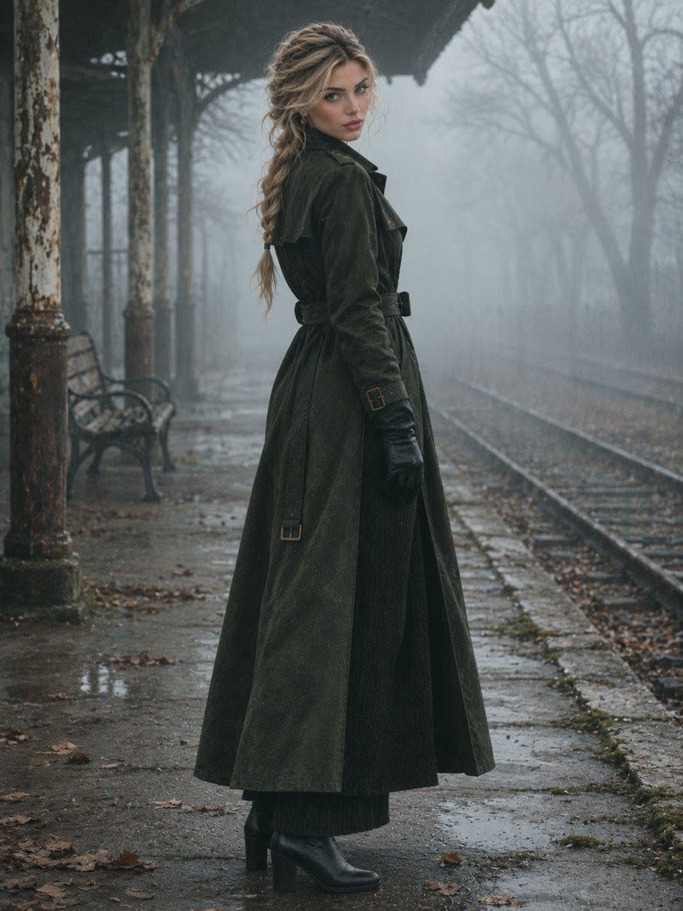

Gothic realism on an abandoned platform: fog, muted 35mm grain and a dark-green waxed-cotton coat (image, model unknown)
GRN-106Grain / Filterunknownby @antrospike2026-11-26

A moody outerwear still: a woman in a belted dark-green waxed-cotton long coat and black gloves on a foggy abandoned railway platform. The prompt is a compact labelled spec (Style, Shot, Hair/outfit, Pose/face expression, Lighting, Colour grading, aspect, Negative) built around "thick fog, muted film grain" and a dark green/black/fog-grey palette. Easy to reuse for outerwear, boots or heritage-fashion campaign stills.
Prompt
Style: Gothic Realism Shot: Medium-wide shot, 35mm, thick fog, muted film grain Hair/outfit: Young woman in her mid-20s, blonde hair in a loose low braid, dark-green waxed-cotton long coat belted over a black knit dress, black leather gloves Pose/face expression: Standing on an abandoned train platform, looking over her shoulder (pose 4). Cold quiet gaze Setting/light: Foggy abandoned platform with rusted rails and bare trees Palette/framing: Dark green, black, fog grey. Vertical 3:4. Negative: no text, no readable signs, no watermark, no signature, no extra fingers, no cartoon look.
Tags: image, gothic, fog, 35mm, muted grain, outerwear, labelled spec, 3:4